Étude de cas · Réseaux sociaux
Création de la ligne éditoriale Instagram d'une salle de sport : identité des posts, photos, carrousels conseils, stories interactives et couvertures de Reels.
Bebas Neue
Projet de démonstration E-DUST Solutions : salle fictive, visuels générés par IA.
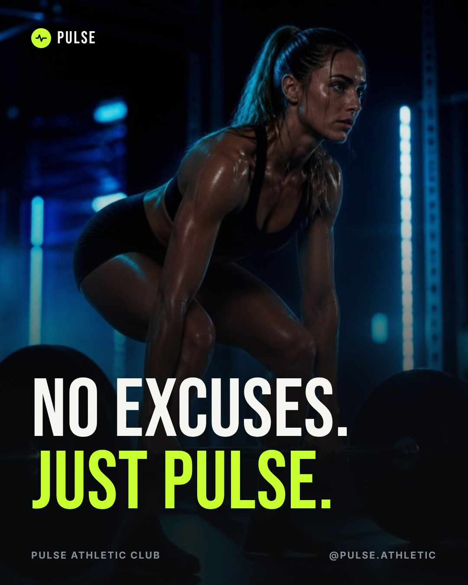
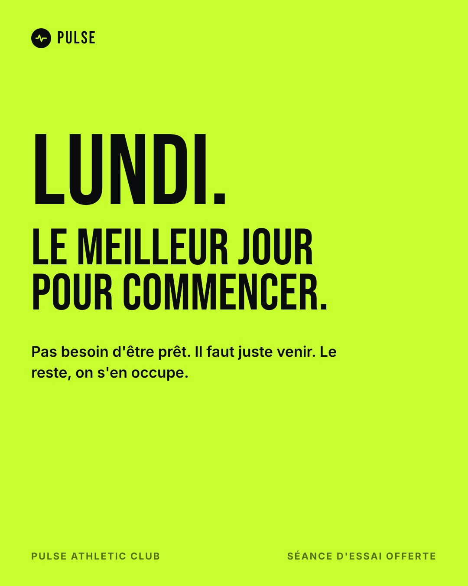
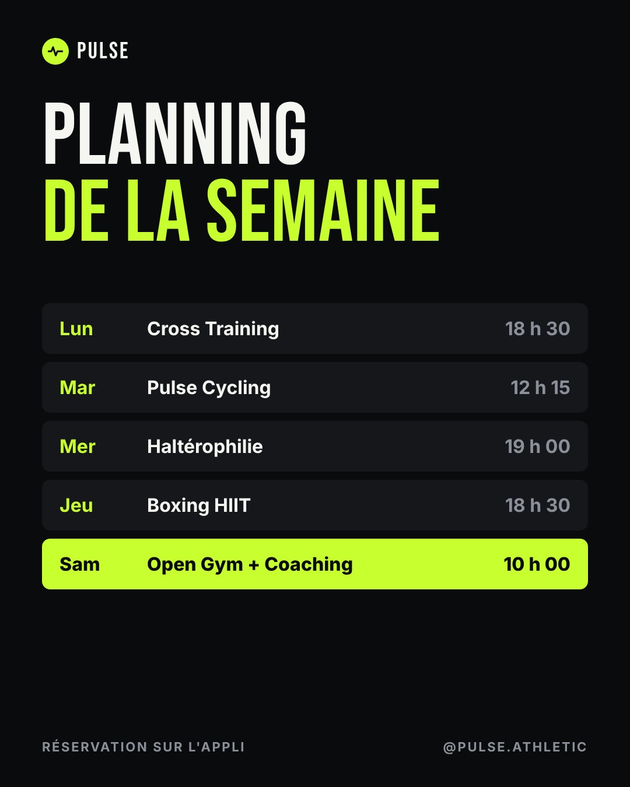
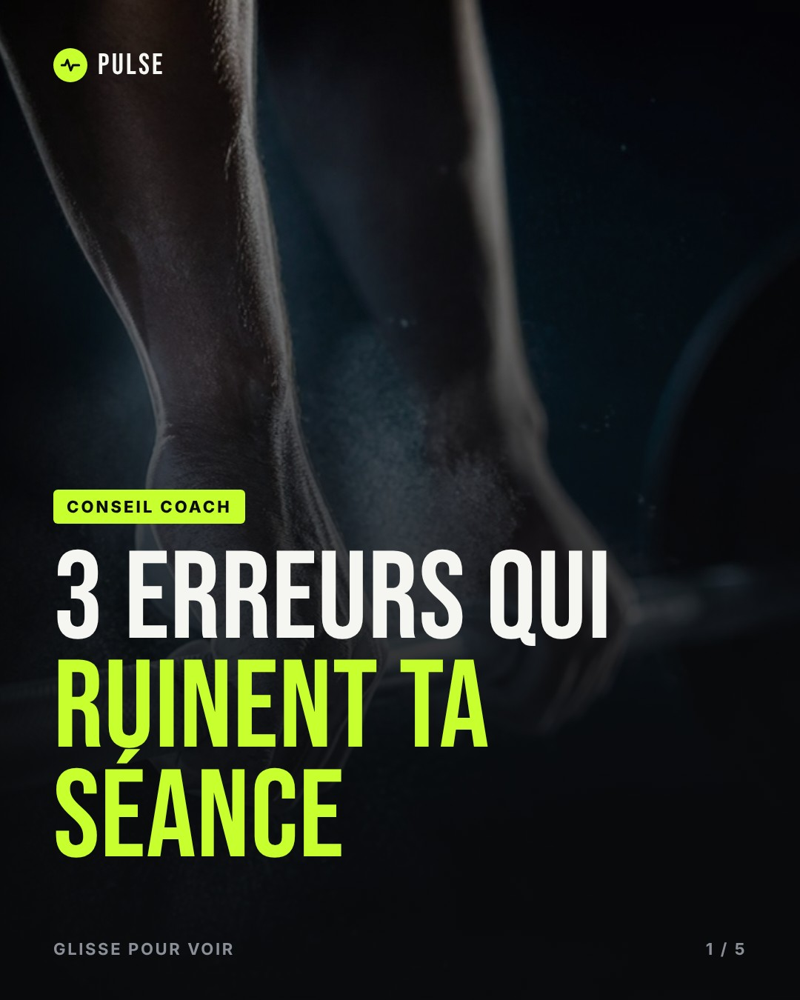
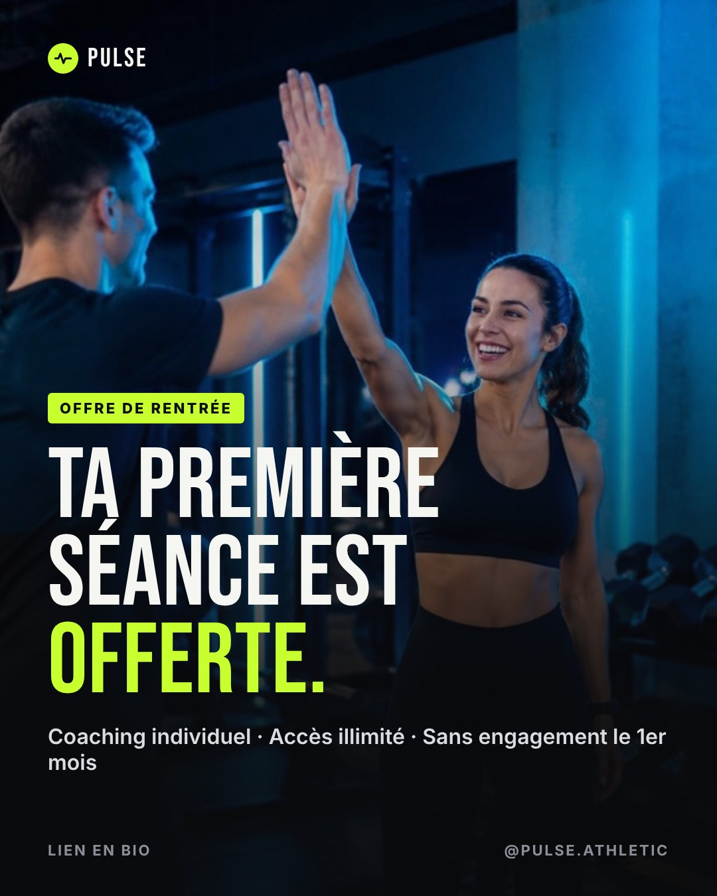
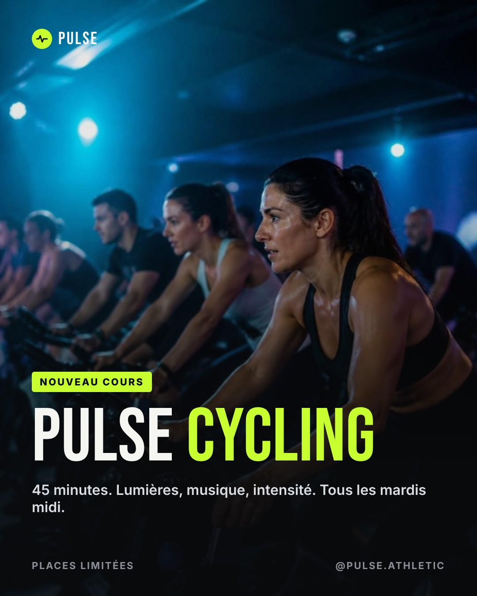
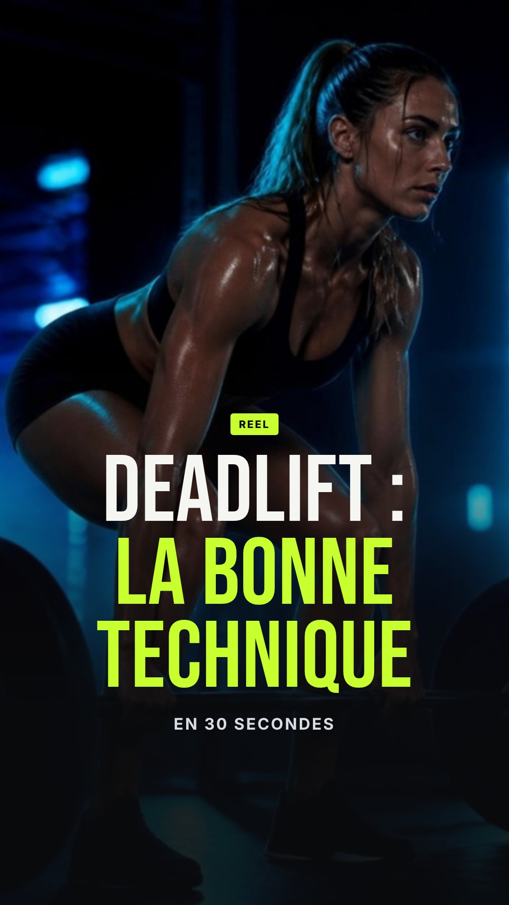
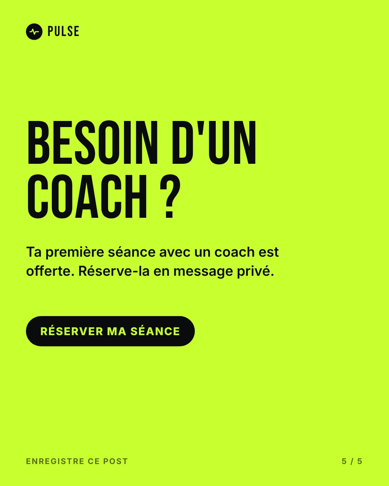
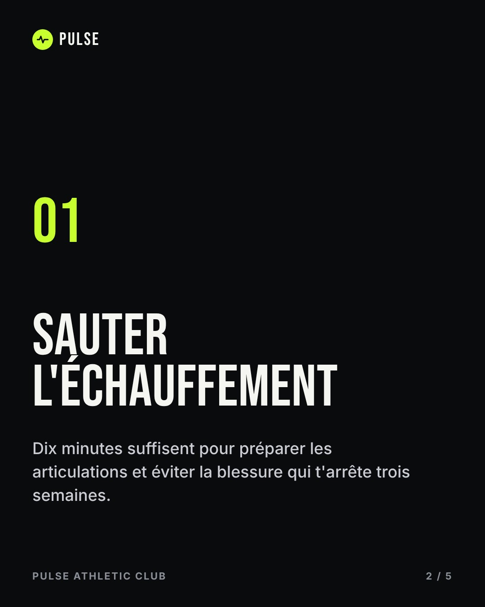
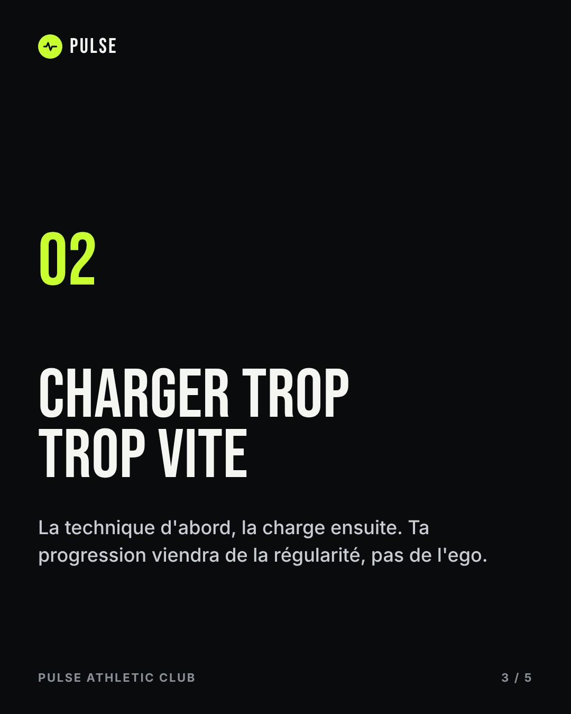
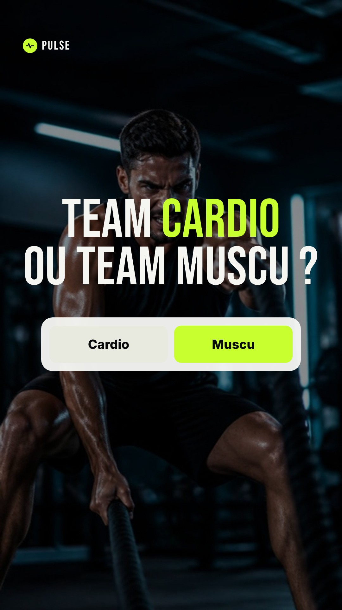
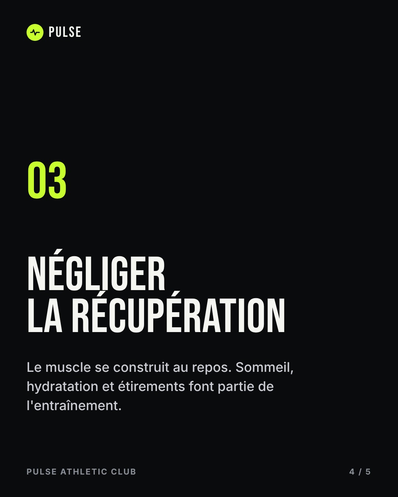
Story interactive